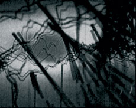

|
DIANA BOBICS
Mix – Remix | 2009 | 1’32’’
www.flachware.de/diana-bobics
The work Mix-remix by Diána Bóbics reminds us of the avant-garde experiment wih motion picture in the avant-garde experiments with motion picture in the 1920-30s;e.g.the abstrect/concrete image world animations by Wiking Eggeling or Oskar Fischinger.The work is an indirect quote of a bygone age and artistic genre, behaviour pattern and medial techniques, yet it is very up-to-date;hence, it could only have been created in our days. The built-in,commercialmulti-medial surface of computer music players has become the raw materialfor an independent artwork by repeatedmodification, via re-photographing.(imageappendix 108./ In .: Zsolt Gyenes : Ptography in Motion)
Diána Bóbics, geb. 1977 in Zalaegerszeg, Ungarn. Studium an der Universität Pécs und an der Akademie der Bildenden Künste München. seit 2006 Studium: Doctor of Liberar Arts, Universität Pécs.
Ausstellungen (Auswahl): 2010 No frontiers Ausstellung mit Nhia Nyen, Hattyúház Galéria, Pécs Doctor of Liberal Arts , Jubileumausstellung , Galerie Nádor, Pécs Jahresausstellung der PTE - MK Doctor of Lyberal Arts, Pécs „In – Between” Festival, Pécs | 2009 „Island of Art Festival“ White-Box/München Jahresausstellung der PTE - MK Doctor of Lyberal Arts, Pécs „We are here”, Kunsthalle,Tübingen "some kind of vacuum", Galerie Royal, München “Spatial – Illusions” Grassereins Galerie /München Weltraum Retrospektive, Lothringer 13, /München “Kozmosz”, Városi Hangverseny és Kiállítóterem Galerie /Zalaegerszeg 2008 | Uncut Version Museum Ernst, Budapest 2007-08 | DLA Jahresausstellung, Galerie Pécs, Pécs 2008 | „under the bridge“ Ozto Steidle Ateliers, München 2008 | 2007 Bollywood Projekt, Sziget Festival - Kunsthalle Budapest | Klasse Scully, White Box München 2007 | „Island of Arts Festival” , Praterinsel, München 2007 | Night stop „ Bollywood TV-Show“ ICA , Dunaújváros 2007 | „Crossbreeding” , Young Artist from Munich, Hattyúház Galerie, Pécs 2007
zurück
|